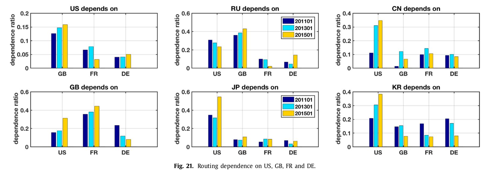
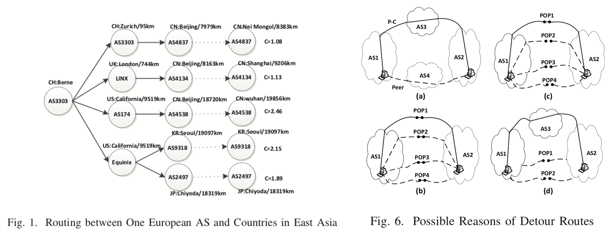
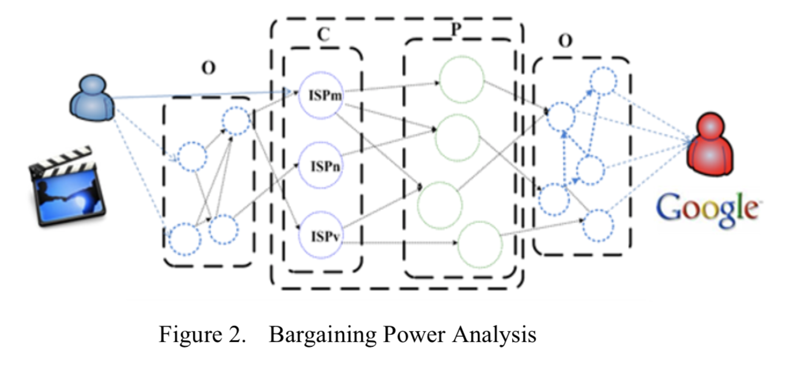
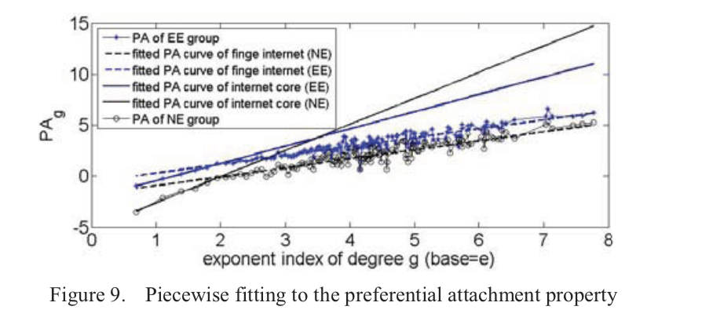
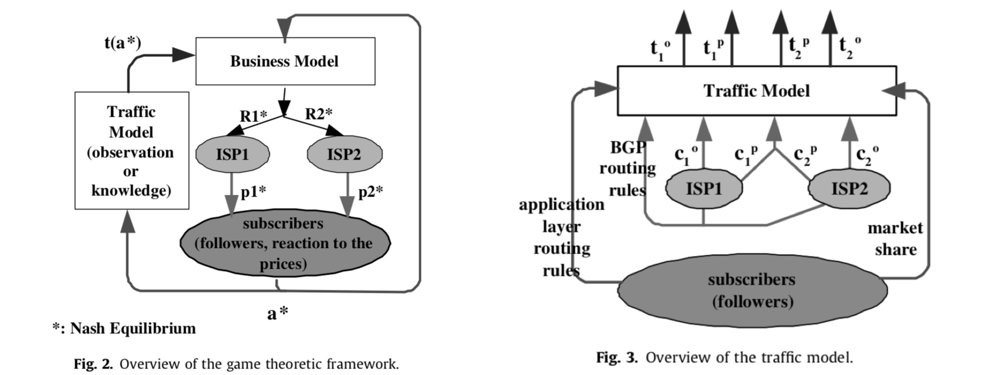

Details of Some Publications
| [CoNEXT 2021] | 
Shuying Zhuang, Jessie Hui Wang, Jilong Wang, Zujiang Pan, Tianhao Wu, Fenghua Li, and Zhiyong Zhang, "Discovering Obscure Looking Glass Sites on the Web to Facilitate Internet Measurement Research," CoNEXT 2021, Munich, Germany (Virtual Conference), December 7-10, 2021. doi: (to appear.) paper Despite researchers have noticed that Looking Glass (LG) vantage points (VPs) are valuable for Internet measurement researches, they can only exploit VPs from well-known LG sites published on several LG portal pages. There should be a lot of LG sites that are not published in these portal pages, namely obscure LG sites, which are not easy to be found and exploited by researchers. In this paper, we design an efficient focused crawler to discover as many LG sites as possible which can avoid unnecessary resource consumption on analyzing irrelevant pages. To facilitate practical applications, we further develop an automation tool, which can successfully retrieve 910 obscure automatable LG VPs from relevant pages obtained through our focused crawler. The 910 LG VPs significantly increase the geographic and network coverage of available VPs and we show their potential values in improving the completeness of AS-level Internet topology by a simple case study. Our method and the final VP list (which will be publicly accessible) are beneficial to the measurement community. We make all artifacts of this paper available at Github, including source codes, tools developed by us, and the final list of 1,446 known automatable VPs and 910 obscure automatable VPs found by us. |
| [CN 2018] | 
Jessie Hui Wang, Changqing An, "A Study on Geographic Properties of Internet Routing," CN 2018, vol. 133, pp. 183-194, 2018. paper In order to make a better control over the routing of Internet traffic, more and more researchers and governments want to understand how international reachability depends on individual countries. It has been necessary and valuable for us to study the geographic properties of Internet routing. In this paper, we conduct a measurement study on the dataset from 2011 to 2015 to understand two geographic properties of Internet routing: geographically routing circuitousness of paths and geographically routing centrality of countries and continents. Our analysis shows that the routing circuitousness of our Internet is deteriorating in these years. We also find that United States, Great British, France and Germany have most control over the data transfer in the Internet, but their farness centrality indexes are not smallest. Furthermore, our temporal analysis on the routing dependence among countries and continents finds out the importance of Europe was decreasing comparing with its competitor North America in the past years. |
| [ICOIN 2016] | 
Pengcheng Du, Hui Wang, Jiahai Yang, Jianfeng Wang, and Youjian Zhao, "Analyzing Intercontinental Circuitousness to Improve the Interconnection and Routing for ISPs," ICOIN 2016, Malaysia, Kota Kinabalu, January 13-15, 2016. paper Routing detours raise concerns both on network security of nations and efficiency of resource consumption. Geo-optimal routing can be viewed as a long term goal of Internet routing, and a careful designed Internet together with geo-optimal routing can produce the best performance for the Internet. In this paper, we focus on some representative intercontinental circuitous paths summarized from our measurement data set. With the help of PeerDB and CAIDA, we try to find possible reasons for the detour routing and propose some suggestions to improve interconnection and routing for ISPs. |
| [NOMS 2014] | 
Miao Li, Hui Wang, Jiahai Yang, Chenxi Li," A Value Based Framework for Provider Selection of Regional ISPs," NOMS 2014,May 5-9 2014, Krakow, Poland. paper To access to the Internet, regional Internet Service Providers (ISPs) have to buy transit service from global ISPs. Provider selection strategies are related closely to ISPs` economic interests. With the growing number of potential transit provider and the flattening topology of the Internet, it’s getting harder for ISPs to select upstream provider empirically as before. In this paper, we propose a concept of bargaining power as an important decision-making criterion of ISPs during their provider selection process, and design a value based framework to help ISPs’ provider selection based on it. The bargaining power of each involved ISP is computed by applying the Shapley Value based transit value distribution mechanism to each involved traffic flow, taking into consideration the cooperative possibility among ISPs and the market roles these ISPs play, i.e., potential providers or potential competitors. It reflects not only the cost and link level transit performance, geographical constraints, but also includes the influence of interconnection impacts, demand/supply relationships by analyzing the traffic content and commercial relationships among ISPs. We then design a quantitative provider selection framework and instantiate our framework using the operation data of a real-world network, CERNET, a national ISP in China. In addition, we evaluate our provider selection results for CERNET and the experimental results show the effectiveness and practicability of our solution in this paper. |
| [APNOMS 2012] | 
Miao Li, Hui Wang, Jiahai Yang, " Flattening and Preferential Attachment in the Internet Evolution," APNOMS 2012, September 25-27, 2012, Seoul, South Korea. paper Understanding of the Internet evolution is important for many research topics, such as network planning, optimal routing design, etc. In this paper, we try to analyze CAIDA AS-level topology dataset from 2004 to 2010 to validate two conjectures on the Internet evolution, i.e., the Internet flattening trend and the preferential attachment rule. Our analysis shows that the evolvement of the Internet core is different from the edge of Internet. We classify the Internet into several layers using different layering methods, i.e., Rich Club coefficient based method, k-core decomposition method and SARK hierarchy model, and then study the changes of the features of these layers. Under all of these laying methods, we find that the boundaries between neighboring layers in the Internet core are more and more blurred; ASes in the core distribute more evenly and different layers are closer to each other in size, while the Internet edge still has a distinct hierarchical characteristic. It is more evident in Asia and Europe than North America. The other difference between Internet core and Internet edge is that link births/deaths in the Internet core follow the "Preferential Attachment/de-attachment" rule, while link births/deaths in the Internet edge follow a super linear preferential attachment/deattachement rule. On the other hand, in both Internet core and Internet edge, link births caused by AS births present stronger preference than link rewiring. |
| [CN 2008] | 
Jessie Hui Wang, Dah Ming Chiu, and John C.S. Lui, "A game–theoretic analysis of the implications of overlay network traffic on ISP peering," CN 2008, Elsevier, Vol.52, No.15, pp. 2961-2974, Oct. 2008. paper Inter-ISP traffic flow determines the settlement between ISPs and affects the perceived performance of ISP services. In today’s Internet, the inter-ISP traffic flow patterns are con- trolled not only by ISPs’ policy-based routing configuration and traffic engineering, but also by application layer routing. The goal of this paper is to study the economic implications of this shift in Internet traffic control assuming rational ISPs and subscribers. For this purpose, we build a general traffic model that predicts traffic patterns based on subscriber distribution and abstract traffic controls such as caching functions and performance sensitivity functions. We also build a game–theoretic model of subscribers picking ISPs, and ISPs making provisioning and peering decisions. In particular, we apply this to a local market where two ISPs compete for market share of subscribers under two traffic patterns: ‘‘Web” and ‘‘P2P overlay”, that typifies the transition the current Internet is going through. Our methodology can be used to quantitatively demonstrate that (1) while economy of scale is the predominant property of the competitive ISP market, P2P traffic may introduce unfair distribution of peering benefit (i.e. free-riding); (2) the large ISP can restore more fairness by reducing its private capacity (bandwidth throttling), which has the drawback of hurting business growth; and (3) ISPs can reduce the level of peering (e.g. by reducing peering bandwidth) to restore more fairness, but this has the side-effect of also reducing the ISPs’ collective bargaining power towards subscribers. |